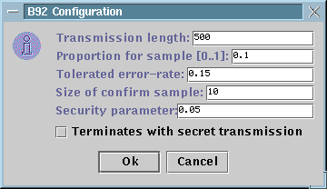

Implementation of the B92 QKD protocol
The B92 protocol for quantum key distribution [see Phys.
Rev. Letter, 68,3121 1992] is implemented in QuCrypt
similarly to the way the BB84 protocol is implemented. In the following
we list all important steps and give some details of implementation.
We also show how Alice (the initiator) can configure the protocol settings
before the execution. An example of the output produced by the execution
of the B92 protocol can be found here. The B92
suffers more security weaknesses then the BB84 scheme. We don't have
any security analysis for this protocol.
The B92 QKD protocol:
-
(quantum transmission) The B92
quantum transmission is executed.
-
(good positions selection) Bob announces the positions
he could identify with certainty. Let
N be the number of
remaining bits. The key shared at this point is called the raw key
(note that it is not really shared since Alice's and Bob's version
are different).
-
(error estimation) Alice announces a subset of positions
of size K and the bit values for those positions in the raw
key. Bob also returns the bits he received in those positions. Both players
compute the observed error-rate e and accept the quantum
transmission if e <= emax
as set initially by Alice. They finally remove the K bits
announced from the raw key . If e >emax
then Alice and Bob abort.
-
(reconciliation) Alice and Bob perform an interactive
reconciliation protocol releasing an extra R parity bits
about the reconciled key which is the corrected version of the raw key
(see below). If the
resulting error-rate ereal
> emax then Alice
and Bob abort.
-
(confirmation) Alice selects L random
subsets X1,...,XL of
positions and announces Xi together with the parity
of all bits in Xi for 1<= i <= L.
Bob compares the parity bits announced by Alice to the one he gets
with his bits and tells Alice whether they are all the same. If some parity
bits do not match then Alice and Bob abort.
-
(privacy amplification) Alice announces to Bob the
description of a randomly selected hashing function f from
N-K
bits to N-K-L-R-S
secret bits (see below). They
each applies f on the reconciled key in order to get the
final secret-key Xf in {0,1}N-K-L-R-S.
Initial Configuration
Alice is responsible to setup the configuration for the protocol
execution. This can be done by settings the values in the configuration
panel. The panel looks as follow:

The length of the raw key here is different than
the value of N defined above. It is length of the quantum
transmission before the positions not detected with certainty have been
removed. This is the number of pulses received by Bob and measured in whatever
basis and leading to whatever result. If M is the value
selected (here in the example we have M=500), then the
value of N is approximatively M/4.
The porportion for sample is the number of random
positions among N that have been received by Bob and measured
in the right bases that are going to be sampled for error-rate estimation.
In the example above, 0.1N positions will be used in order
to compute the observed error-rate e.
The size of confirmation sample is the value for
L
as defined in the protocol description . In the example above, 10 random
subsets will be picked and their parity exchanged. The reconciled
key will be identical except with probability at most 2L
whenever the confirmation phase succeeds.
The proportion for PA allows to set the value of
S
as described in the protocol description. In the example above, we
the S=0.05(N-K) will be selected.
The last option allows for the transmission of an encrypted
short message after QKD has been executed with success. This is mainly
for demonstration purposes.
Good
Positions identification and Error Estimation
The identification of positions that have been detected reliably
by Bob and the error-estimation are implement in PlainB92
class. The result of this phase is the raw key.
Reconciliation
and Confirmation
Reconciliation has been implemented using protocol CASCADE.
It is a parity-based and interactive error-correction algorithm. Although
CASCADE requires a lot of interaction thus slowing
down the rate at which secret-key generation can be achieved, it allows
to save more bits of key after privacy amplification. If the quantum channel
is an expensive ressource then it is probably better to spend more time
during reconciliation in order to save more final bits. Moreover, the saving
of more bits also means that for a fixed error-rate, secure key distribution
can be achieved over longer distances. On the other hand, if for
some settings the rate at which the secret-key is generated is the main
concern, using a less interactive version of CASCADE
might be preferable (especially when the classical channel is slow like
the internet). We use the fully interactive version of CASCADE
in order to get R as close to Shannon's lower bound (N-K)h(e)
as possible. Reconciliation is the most time consuming operation
in the classical phase. Under our experimental conditions, it requires
a time comparable to what is needed for raw key generation. Interaction
is very expensive on the internet. Here you can find more information
about CASCADE.
CASCADE is implemented in the Cascade
class.
Confirmation is implemented the obvious way and allows
to make sure that Alice and Bob are sharing identical keys (which
is not completely secret). In particular and for a given L,
the probability that Alice and Bob think they share identical keys while
in fact they don't is no more than 2-L.
Reconciliation and confirmation in the B92 scheme are
implemented in the
RecB92
class.
Privacy Amplification
Privacy amplification consists for Alice in choosing randomly
a hashing function f:{0,1}N-K
-> {0,1}N-K-L-R-S from some
class F. She then announces the description of f over
the public channel allowing Alice and Bob to compute the final key Xf=f(XA)=f(XB)
where XA and
XBare
the partially secret strings in {0,1}N-K obtained
after confirmation. In order for privacy amplification to produce a statiscally
secret Xf,
the class F must be universal2
(see BBR). Moreover, in order for privacy amplification to be efficient,
the description of f in F should be short.
We've implemented privacy amplification using an universal2
class of hashing functions F introduced by Krawczyk.
Any function f in F is described by a
Toeplitz matrix Ts
where s in {0,1}2N-2K-L-R-S
is
randomly selected and sufficient for describing f.
As a result, the description of f requires the transmission
of only O(N) bits (one-way communication) and time in O(N2)
for evaluating it. This makes the contribution of privacy amplification
to the secret-key generation rate almost negligeable.
Privacy amplification in the B92 scheme is implemented
in the B92
class.